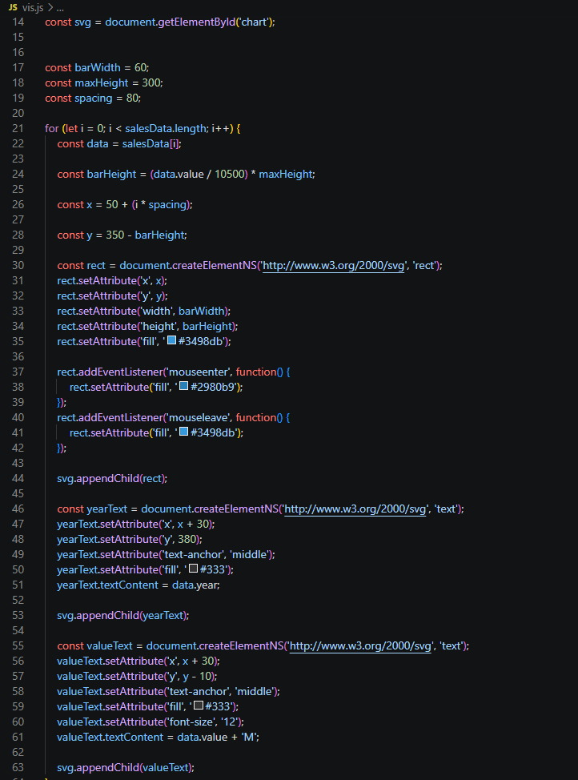
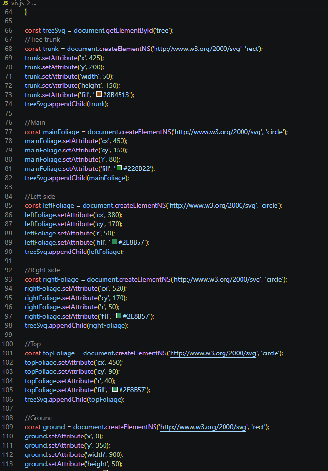
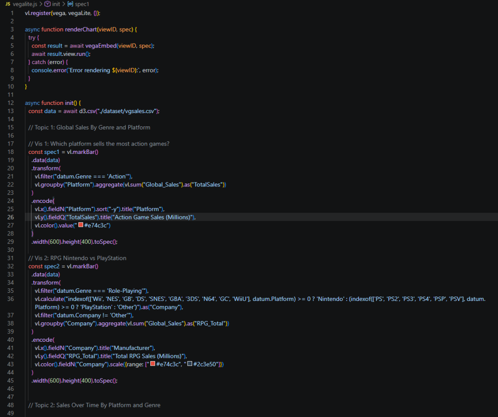

Charts coded from scratch with SVG and Vega-Lite. Made for IAT355: Data Visualization.
Everything on this page was written in code rather than drawn in a chart tool. Each chart is built in the browser from HTML and JavaScript, so every bar, point and colour comes from a decision I wrote down.
The work moved through two stages in the course. First I drew charts by hand with raw SVG to learn what a chart actually is underneath: shapes placed on a grid. Then I switched to Vega-Lite, which describes a chart as data, transformations and encodings, and let me answer real questions about a dataset much faster.
For the bar chart, the values live in a plain JavaScript array. A loop goes through the array and creates one SVG rect per year. The height of each bar is the value divided by the largest value, multiplied by the maximum bar height in pixels, and the bar is placed so it sits on the baseline. Text labels for the year and value are created in the same loop, and mouse listeners darken a bar when you hover over it.
The tree is a warm-up in the same spirit: a trunk, four overlapping circles for the leaves, a strip of ground and a row of grass, all placed by coordinates.
A bar chart drawn shape by shape from an array of yearly values. Hover over a bar to highlight it.

rect, and adds the labels and hover colour change.A Tree Drawn Only With SVG Rectangles and Circles.

rect or circle with its position, size and colour set by attributes, then added to the SVG.These eight charts all use one dataset of video game sales, with global sales and sales for North America, Europe, Japan and other regions, in millions. The script loads the CSV with D3, then builds each chart with the Vega-Lite JavaScript API and renders it with Vega-Embed.
Each chart starts from a question, such as which platform sells the most Action games. To answer it I filter the rows I need, group them (by platform, year or genre) and add up the sales, then map the results to position and colour. A few charts needed extra steps. The Nintendo against PlayStation chart uses a calculated field to sort each platform into a manufacturer, and the regional charts fold the separate sales columns into rows so regions can be compared on one axis. The time-based charts are limited to 2016 and earlier. Red and dark blue are used throughout to match the rest of this site.

This chart shows which platforms sold the most games of the Action genre.
Comparing sales of the RPG genre of the two giants of console gaming.
A look at whether Strategy games have maintained their niche or declined over time.
Visualizing the trajectory of Shooter games in the global market.
Tracking how the Xbox series of consoles performed across its two primary Western markets.
This stacked bar graph shows how each console has sold by regional sales.
An area chart showing the changes of handheld gaming market share over the years.
A scatter plot identifying genres where Japanese and American players have vastly different preferences.